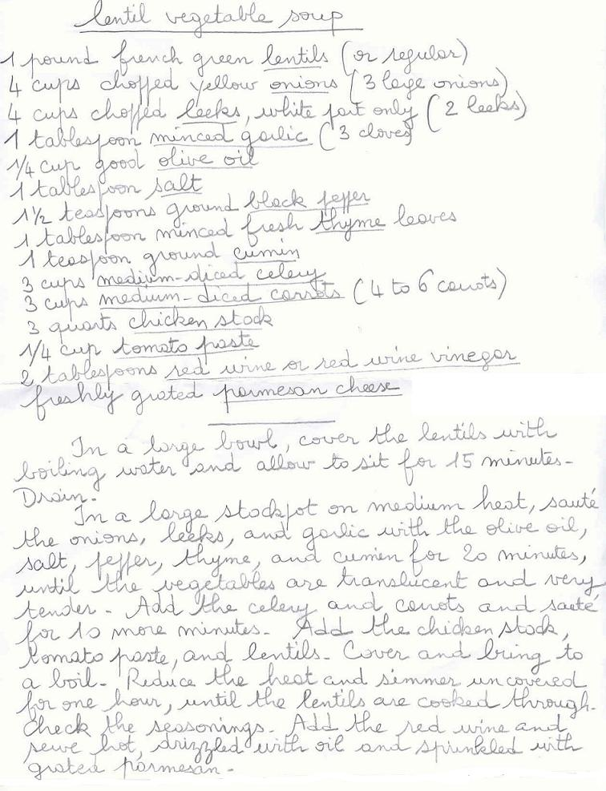

Recette n°118 :
Lentil vegetable soup as prepared
by Nancy Mathews in San Diego
Ingrédients et
préparation :

Observations :
- recette rapportée de san José en mars 2007 et
réalisée le 14 mars à Rennes pour nous deux ;
excellente.
- à noter qu'il serait préférable de modifier
l'ordre des préparations en commençant par
préparer le bouillon de poule, puis en continuant par
préparer tous les légumes avant de les faire revenir.
- comme cette soupe n'est pas passée au mixeur, penser à
couper les poireaux en tous petits morceaux (ce sera plus facile
à manger).